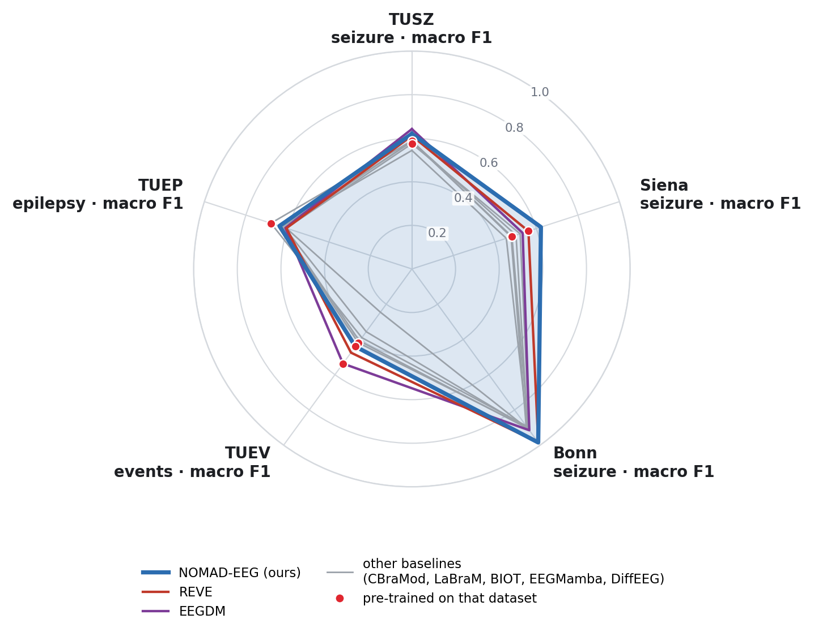
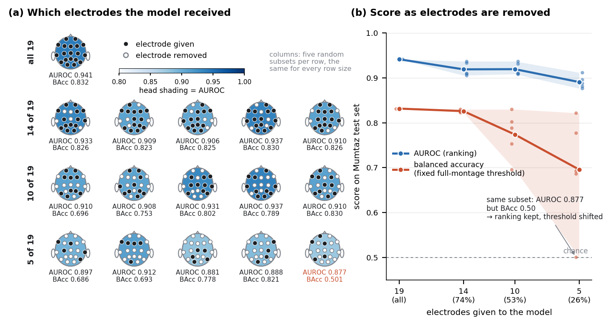

Best of eight models. Next: DiffEEG 0.418, REVE 0.371.
EEG foundation model
One small model for any electrode montage.
NOMAD-EEG reads EEG with any number of electrodes, in any order and of any length. It identifies each electrode only by its 3D position on the scalp. It has 12.0 M parameters and was pre-trained on 147 hours of unlabelled EEG from one corpus. On ten downstream datasets it was compared with seven EEG foundation models, all run under the same protocol.
19 electrodes · Mumtazsame weights, every montage
- 12.0 Mparameters (REVE: 69 M)
- 147 hof pre-training EEG, one corpus
- 1–64electrodes read without retraining
- 10downstream datasets
- 7foundation models compared
The model
Electrodes are positions, not slots.
Most EEG foundation models are tied to the channel set and input length they were trained on. A recording with a different cap, fewer electrodes or a different duration has to be remapped, padded or cut to fit.
NOMAD-EEG never sees a channel index. Each electrode enters with its signal and its 3D coordinate from the standard 10–20 and 10–05 systems, and a bipolar derivation is placed at the midpoint of its two electrodes. The network mixes information along time with state-space layers, without patches, and across electrodes with attention, so the output does not depend on the order in which electrodes are listed.
The backbone is a diffusion model. After pre-training, its intermediate activations serve as features for a frozen linear probe or as the starting point for fine-tuning.
Architecture
From raw signal to a 10,240-dimensional embedding
Input
An
E × Tsignal with one 3D position per electrode. Resampled to 200 Hz and robust-scaled per corpus.Per-electrode stem
The same stem embeds every electrode's signal independently, with no channel-specific weights.
Time mixing
S4D state-space layers along time, without patches, so any segment length is accepted.
Electrode attention
Attention across electrodes, with Fourier features of the 3D coordinates. Steps 3 and 4 alternate over 16 blocks (d = 256).
Embedding
Mean and standard deviation of four gate blocks over five windows give a 10,240-d feature vector.
Highlights
Where NOMAD-EEG leads
Frozen linear probes unless stated. Every number is from the paper's tables; the full tables, including the tasks where other models are better, are below.
Best of eight models. Next: REVE 0.562, EEGDM 0.534.
Best of eight models. REVE 0.998, CBraMod 0.996.
Highest accuracy and macro F1 of the seven models compared, at the patient level.
After fine-tuning, the highest κ and weighted F1 (0.814). The baselines were evaluated as frozen probes.
Best of five models. Picks the attended object in 75.5% of blocks after ten runs (EEGDM 61.2%).
Results
Full benchmark
All baselines were run by us from their released weights, each with its native input format. Frozen encoders with a class-balanced logistic-regression probe; brackets give 95% bootstrap confidence intervals. Bold is the best value in each column.
† the model's pre-training data included this dataset or the corpus it comes fromIndented rows: NOMAD-EEG variants, outside the bold comparison unless stated
Epilepsy summary and missing electrodes
Robust when electrodes go missing
On Mumtaz, a probe trained once on all 19 electrodes was applied unchanged to random subsets. Mean AUROC went from 0.942 with all electrodes to 0.919 with 14, 0.919 with 10 and 0.891 with 5, and no subset fell below 0.877. Listing the electrodes in a different order changed no prediction.


Weights
Pre-trained backbone and code
The release contains the EMA weights of the NOMAD-EEG backbone used for every result on this page: the diffusion model, 12.0 M parameters, pre-trained on TUEV for about 74 epochs.
The repository has the model code and scripts for linear probing, fine-tuning and testing on your own data.
pip install -e . # after cloning the repository
import nomad_eeg
model = nomad_eeg.load_pretrained("nomad_eeg_base.pt") # the downloaded weights
x = nomad_eeg.preprocess(x_uv, fs=256) # [N, E, T] microvolts -> 200 Hz
scaler = nomad_eeg.RobustScaler().fit(x) # training data only
feats = nomad_eeg.extract_features(model, scaler.transform(x), channels)
Citation
Cite NOMAD-EEG
@article{helwan2026nomadeeg,
title = {{NOMAD-EEG}: Native Omni-Montage Adaptive Diffusion},
author = {Helwan, Abdulkader and Henni, Khadidja and Abou-Abbas, Lina},
journal = {arXiv preprint arXiv:2610.35246},
year = {2026}
}